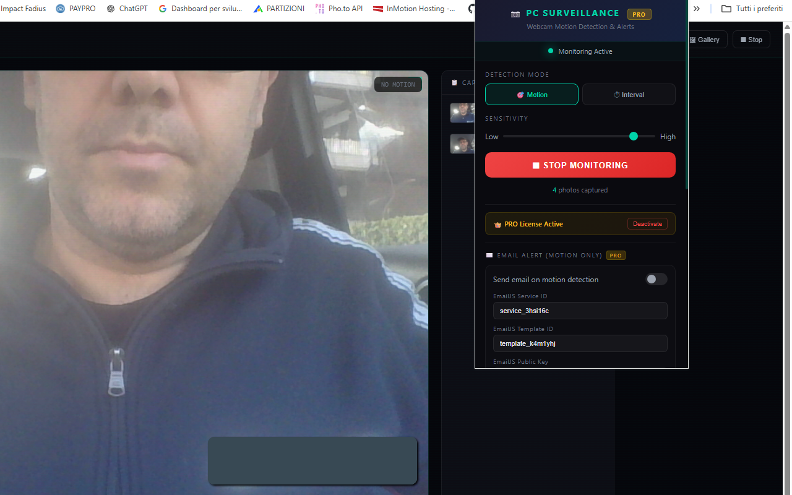
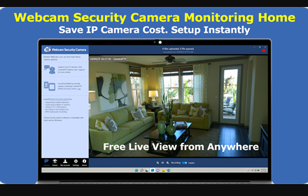

PC Surveillance - Webcam Motion Detection & Alerts
Turn your PC webcam into a powerful surveillance system 📷. With PC Surveillance, you can detect motion in real time, automatically capture photos, and receive instant email alerts with the captured image attached — all directly from your browser, with no extra software to install.
Whether you want to monitor your room while you're away, keep an eye on your office, watch over your pets, or secure any space with a webcam, this extension does it all with a sleek, professional CCTV-style interface. Just click "Enable Monitoring" and your webcam becomes a smart security camera.
The Motion Detection mode 🎯 uses intelligent pixel-difference analysis to detect movement in real time. When motion is detected, a photo is captured and saved instantly. The adjustable sensitivity slider lets you fine-tune detection — from catching the slightest movement to ignoring small changes like lighting shifts. A visual motion level bar shows you exactly how much movement is happening, with a threshold indicator so you can see when captures will trigger.
Prefer scheduled monitoring? The Interval Capture mode ⏱️ takes photos at regular intervals — every few seconds or minutes — perfect for time-lapse monitoring, periodic room checks, or any scenario where you want automatic snapshots on a timer.
The live surveillance monitor gives you a full-page view with a professional CCTV aesthetic: live camera feed with real-time timestamp, motion level indicator, corner marks, scanlines, a flashing REC badge, and a capture log with thumbnails on the sidebar. It looks and feels like real surveillance footage.
Every captured photo is automatically saved to your Downloads/MotionDetection folder as a JPEG file with date-time naming (e.g., capture_20260303_125042.jpg), so you always have a local backup. Browse all your captures in the built-in photo gallery with grid view, filters, full-size lightbox, and bulk download or delete options.
With the PRO version, you unlock email alerts with photo attached 📧. Every time motion is detected, you receive an email notification with the captured image embedded directly in the message — so you know instantly when something moves in front of your camera, even when you're away from your PC. Email notifications are powered by EmailJS (free tier: 200 emails/month), with a simple one-time setup.
📋 How to Use
- Install the extension from the Chrome Web Store.
- Click the extension icon in the toolbar to open the popup.
- Choose your detection mode: Motion or Interval.
- If using Motion mode, adjust the sensitivity slider (left = less sensitive, right = more sensitive).
- If using Interval mode, set the capture frequency (e.g., every 10 seconds or 5 minutes).
- Click "Enable Monitoring" — a new tab opens with the live surveillance monitor.
- Allow camera access when prompted by the browser.
- The system is now active! Photos are captured automatically and saved to your Downloads folder.
- Click "Stop" at any time from the monitor page or the extension popup.
- Open the Gallery to review, download, or delete captured photos.
💡 Tips for Best Results
- Position your webcam to cover the area you want to monitor.
- Start with medium sensitivity (around 30-40) and adjust based on results.
- Lower sensitivity = only large movements trigger capture (fewer false positives).
- Higher sensitivity = even small movements trigger capture (catches more activity).
- Keep the monitor tab open — the camera needs this tab active to work.
- For long sessions, Interval mode gives periodic snapshots without depending on motion.
📷 Screenshots


✨ Key Features
- Motion Detection — Real-time movement detection with adjustable sensitivity slider
- Interval Capture — Automatic photo capture at custom intervals (seconds or minutes)
- CCTV-Style Monitor — Full-page live surveillance view with timestamp, motion bar, REC badge, and capture log
- Photo Gallery — Browse captures with grid view, filter by type, lightbox preview, download and delete
- Auto-Download — Every photo saved automatically to Downloads/MotionDetection with date-time filename
- Email Alerts (PRO) — Receive email with captured photo attached on every motion detection
- Adjustable Sensitivity — Fine-tune from subtle movement detection to large motion only
- Two Detection Modes — Motion-triggered or timer-based interval capture
- Real-Time Feedback — Motion level bar, threshold indicator, and visual "MOTION DETECTED" alert
- PRO License System — Unlock unlimited captures, email alerts, and faster cooldown
- Auto-Save Settings — All configurations persist automatically, no manual saving needed
- Dark Theme Interface — Professional, sleek design inspired by real surveillance systems
🆓 Free vs PRO
| Feature | FREE | PRO |
|---|---|---|
| Motion Detection | ✅ | ✅ |
| Interval Capture | ✅ | ✅ |
| Live CCTV Monitor | ✅ | ✅ |
| Photo Gallery | ✅ | ✅ |
| Auto-Download Photos | ✅ | ✅ |
| Photos per Session | 50 | Unlimited |
| Capture Cooldown | 5 seconds | 3 seconds |
| Email Alerts with Photo | ❌ | ✅ |
📧 How to Set Up Email Notifications (PRO)
Email alerts are powered by EmailJS, a free service that sends emails directly from the browser. Setup takes about 5 minutes, one time only. After configuration, all your settings are saved automatically.
- Go to emailjs.com and create a free account (200 emails/month free).
- In your dashboard, click Email Services → Add New Service → select Gmail → connect your Gmail account.
- Click Email Templates → Create New Template. Set the fields as follows:
- 📌 Subject:
{{subject}} - 📌 Body (HTML):
<p>{{message}}</p> <p>Time: {{timestamp}}</p> <img src="{{photo_data}}" style="max-width:100%;border-radius:8px" />📌 Set the "To Email" field in the template to:
{{to_email}} - 📌 Subject:
- Copy your Service ID (from Email Services), Template ID (from Email Templates), and Public Key (from Account → API Keys).
- Open the extension popup, enter your PRO unlock code, then paste the three IDs into the Email Alert fields and enter your recipient email address.
- Turn on the toggle "Send email on motion detection" and click "Send Test" to verify. You should receive a test email within seconds.
✅ Done! From now on, every time motion is detected, you'll receive an email with the alert details and the captured photo. There's a 15-second cooldown between emails to prevent spam. All your EmailJS settings are saved permanently.
🎯 Perfect For
- Home security — monitor rooms, entrances, or any area
- Office surveillance — keep an eye on your workspace
- Pet monitoring — see what your pets do when you're away
- Baby room monitor — get alerts on movement near the crib
- Package watch — monitor your front door for deliveries
- Time-lapse — capture periodic photos of projects, plants, or any scene
- Proof of presence — document activity with timestamped photos
- Rental property — check on your property remotely via email alerts
- Classroom or lab monitoring — record activity during sessions
- Content creation — capture candid moments automatically
🔒 Privacy & Security
- Camera access is used only when you explicitly start monitoring
- All photos are stored locally on your device (browser storage + Downloads folder)
- No data is sent to any server — except email alerts if you enable them
- Only two permissions required: Storage (settings) and Downloads (save photos)
- No account required, no tracking, no data collection
- You can revoke camera access at any time through Chrome settings
With PC Surveillance, turning your webcam into a smart security camera has never been easier. Whether you're protecting your home, watching over pets, or just want peace of mind while you're away, this extension gives you professional surveillance capabilities with just a few clicks — right in your browser, no installation needed. 📷🔒
⬇️ Download from Chrome Web Store